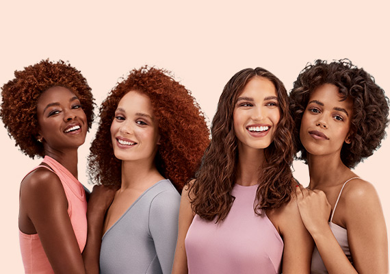

<!-- <app-navbar></app-navbar> -->

<div class=" container">

    
    <div class="bigbox">    
       <div class="text-center">
        
       </div>
       <br>
  <h2 class="m-1 p-2">أنواع فرش الشعر المختلفة وطريقة اختيارها واستخدامها</h2>
  <br>
 <div class="mb-5 p-2 m-1">
  <!-- <p style="font-weight: lighter; font-weight: bold ; margin-bottom: 20px;">تشتهر منتجاتنا بخلطات الزيوت الطبيعية بنسبة 100٪ ومدى تخصصها لكل انواع الشعر.</p>
  <p >دي قائمة هتساعدك على معرفة نوع شعرك لو كان عالي المسامية أو منخفض المسامية لأن كل نوع شعر له المنتجات الخاصة به، كل منتجاتنا طبيعية 100% مخصصة لنوع شعرك.</p> -->
  <p style="font-weight: bold;"> الفرشاة ذات الأسنان الواسعة الرفيعة</p>
 
  <p>إن كنت تمتلكين شعر بخصلات من النوع الرفيع، ولا نقصد هنا الشعر الخفيف أو الكثيف، وليس شرط أن يكون ناعم أو متشابك. بل خصلات الشعر الخفيفة أو الرقيقة، التي يمكن أن تتكسر بسهولة. فسوف تناسبك أكثر الفرشاة ذات الأسنان الرفيعة والقصيرة، بحيث تكون ناعمة ولطيفة على خصلات شعرك، ولن تسبب تساقطه. وإن أردت تجربة الكهرباء الستاتيكية في الشعر، فاختاري الفرشاة المصنوعة من المطاط، مع أسنان النايلون. أما إن كنت من صاحبات الشعر القصير فاختاري فرشاة ذات أسنان متباعدة لأنها ستمنع شعرك من التشابك، وبالوقت نفسه ستكون رقيقة على فروة الرأس.</p>
<br>
  <p  style="font-weight: bold;">فرشاة تكثيف الشعر</p>
<p>يمكنك أن تعتمدي على فرشاة التكثيف Natural boar bristle brushes والتي عادًة ما تكون مصنوعة من خامات طبيعية لا تؤذي الشعر،.خاصة أن شعيرات الفرشاة تكون ذات ملمس لطيف على الشعر الناعم الخفيف، الذي يكون حساس جدًا ويتأثر بسهولة بفرشاة الشعر.كما أن هذه الفرشاة تساعدك على توزيع الزيوت الطبيعية التي تخرج من فروة رأسك للشعر بالكامل، مما يجعله صحي أكثر.</p>
<br>
<p style="font-weight: bold;">فرشاة الشعر الكيرلي الكثيف</p>
<p>يفضل أن تقومي بتمشيط شعرك إذا كان كيرلي وكثيف، بفرشاة مصنوعة من النايلون مثل Paddle brushes، ولكن بشرط أن تكون أسنانها متباعدة، مع وضعية منتظمة ومتوازية، حتى تحافظ على شكل الشعر الكيرلي. هذه الفرشاة تحديدا مناسبة لك عند تجفيف شعرك بالسشوار لأنها ستعطيه اللمعة المرغوبة ولن تضره.لاحظي: ننصحك بأن تمشطي شعرك وهو رطبًا، فإذا أصبح جافًا سيكون من الصعب تمشيطه وسيتساقط بسهولة.</p>

</div>
    </div>
</div>

